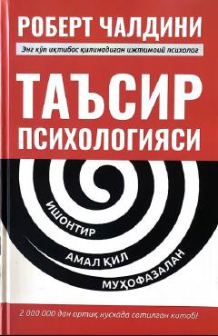

TPInsonlarni ishontirish va ularga ta'sir o'tkazish sirlarini ochib beruvchi qo'llanma.
Ushbu kitob insonlarni “ha” deb aytishga nima majbur qilishi, ta’sir va ишончнинг принциплари ҳамда энг самарали усуллари ҳақида ҳикоя қилади. Роберт Чалдинининг ushbu mashhur asari o'quvchilarga odamlar bilan ishlash, ularga ta'sir o'tkazish va o'zaro munosabatlarni yaxshilash sirlarini o'rgatadi.